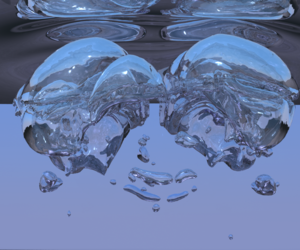

|

|
|
Abstract:
We devise a novel method for treating bubbles in incompressible flow that relies on the conservative advection of bubble mass and an associated equation of state in order to determine pressure boundary conditions inside each bubble. We show that executing this algorithm in a traditional manner leads to stability issues similar to those seen for partitioned methods for solid–fluid coupling. Therefore, we reformulate the problem monolithically. This is accomplished by first proposing a new fully monolithic approach to coupling incompressible flow to fully nonlinear compressible flow including the effects of shocks and rarefactions, and then subsequently making a number of simplifying assumptions on the air flow removing not only the nonlinearities but also the spatial variations of both the density and the pressure. The resulting algorithm is quite robust, has been shown to converge to known solutions for test problems, and has been shown to be quite effective on more realistic problems including those with multiple bubbles, merging and pinching, etc. Notably, this approach departs from a standard two-phase incompressible flow model where the air flow preserves its volume despite potentially large forces and pressure differentials in the surrounding incompressible fluid that should change its volume. Our bubbles readily change volume according to an isothermal equation of state.
|

![[PHOTO]](../../images/knight_small.png)